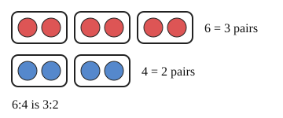

Part of Ratios. Answer in the chat (1: ..., g: c), add sure or guess after any answer, and say done when finished.
Last time: which ratio is the same as 6:4? You said a) 3:2, and it is.

A ratio says how two amounts compare, not how big they are (notes 1). Group 6 red and 4 blue into pairs and you get 3 pairs to 2 pairs: the same mix, smaller numbers. So multiplying or dividing both sides by the same number gives an equal ratio (notes 2).
Q1. Simplify 20:8.
5:2
Right: 4 goes into both sides (notes 2).
Q2. Fill in: 3:7 = 12:?
28 (guess)
Right: 3 x 4 = 12, so 7 x 4 = 28 (notes 2).
Q3. Tia says 2:5 and 4:7 are equal, since she added 2 to both sides. What is wrong?
adding changes the mix, only multiplying keeps it. 2:5 doubled is 4:10, not 4:7 (sure)
Right: equal ratios come from multiplying both sides (notes 2).
You can now simplify a ratio or scale it up.
Ana and Ben share 20 sweets in the ratio 3:2. How many does Ana get?
c (guess)